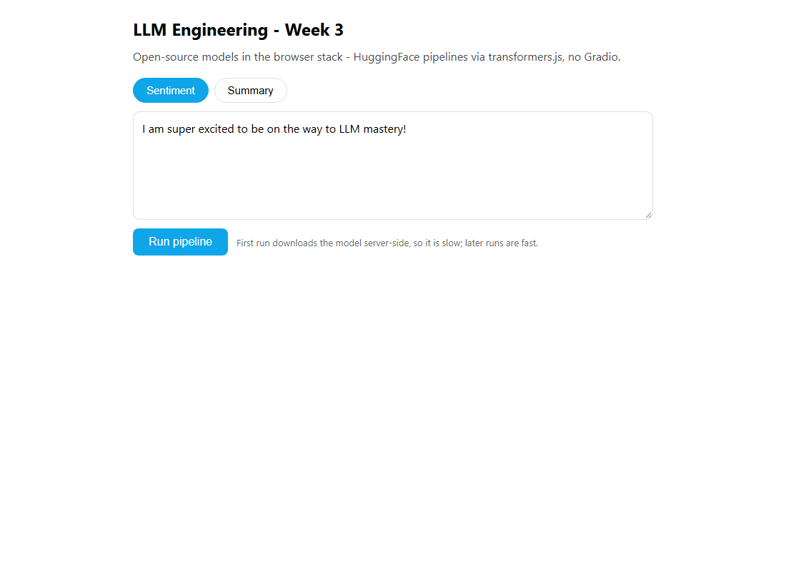

Week 3 · Project Build — Open-Source Toolkit, Step by Step
Build the Week 3 open-source tools from scratch: pipelines, tokenizers and a quantized model in Python + uv (on a Colab/GPU), and a transformers.js version with a React UI in Node + TypeScript.
Build it yourself · Python + uv (GPU) and transformers.js + ReactThe five day-pages explain Week 3's code line by line. This page is different: it is a hands-on build. You will put the whole week's open-source toolkit together, in order, so that at the end you can run the HuggingFace pipelines, inspect a tokenizer, load a 4-bit quantized model and generate with it, and turn a meeting recording into minutes. As in the rest of the guide you build it in two stacks and pick whichever world you live in:
- Track A is the course's own stack: Python with the transformers library, run on a GPU — the free one in Google Colab, or your own if you have one. This is the code shown on the Day 2–5 pages. It is standard HuggingFace code, reconstructed to match the course's Colab notebook; it runs on a GPU and was not executed in this guide.
- Track B is the guide's extra port: React
on the front end with a small Node server, written in
TypeScript. It swaps Python's transformers for
transformers.js, which runs small models
on the CPU with no GPU at all. The finished code lives in the
week3-ts/folder, and the steps below match those files exactly.
The honest difference between the two tracks is size. Track A loads multi-billion-parameter models (Llama 3.1 8B and friends), so it needs a GPU; even at 4-bit that is several gigabytes of GPU memory. Track B runs tiny ONNX models (tens of megabytes) in-process, so it works on an ordinary laptop, but it cannot run the big Llama generation or the GPU quantization demo. Pick one track and follow it top to bottom; you do not need both.
Build it step by step
The runnable Week 3 project lives in the week3-py/ folder and runs on an ordinary CPU with small open-source models, with no paid API keys. Run:
cd week3-py
UV_NATIVE_TLS=1 uv sync
uv run python src/pipelines_demo.py
uv run python src/tokenizers_demo.pyThe pipelines and tokenizers demos run on CPU (they download small models); models_note.py and minutes_note.py only print the 4-bit quantization and Whisper steps, which need a CUDA GPU.
Track A - Python + uv (on a GPU / Colab)
This track builds the week's labs as Python scripts (or notebook cells) and runs them on a GPU. The full, explained code for every file is on the Day 2, Day 3, Day 4 and Day 5 pages; here we only list what to create and run, not re-explain it. Each step tells you what to type and what you should see.
New to GPUs and Colab? Why this track needs them
A GPU is a chip that does the thousands of parallel multiplications a model needs; a big model runs far too slowly (or not at all) on an ordinary CPU. Google Colab gives you a free notebook in the browser with a GPU attached, so you can run this track without owning special hardware. In Colab you pick Runtime → Change runtime type → GPU (a T4 is enough). If you have your own NVIDIA GPU, you can run the same code locally with uv instead.pipeline comes first;
each later day drops to a lower level, ending with the full Whisper-plus-Llama minutes app.- Open a GPU notebook Go to
colab.research.google.comand start a new notebook, then switch on the GPU with Runtime → Change runtime type → GPU (a free T4 is plenty). You can confirm the GPU is attached by running one cell:
If you instead have your own NVIDIA GPU, create a local project with!nvidia-smiuv init llm-week3 && cd llm-week3and run the scripts withuv run pythonin the later steps. - Install the libraries On Colab, install the HuggingFace stack in the first
cell (the
!runs a shell command from inside the notebook):!pip install transformers torch bitsandbytes accelerate diffusers sentencepiecetransformersis the main library,torchis the deep-learning engine it runs on,bitsandbytesdoes the 4-bit quantization (Day 4),accelerateplaces the model on the GPU,diffusersis the image-generation sibling mentioned on Day 2, andsentencepieceis a tokenizer dependency some models need. Running the same thing locally with uv instead:uv add transformers torch bitsandbytes accelerate huggingface-hub - Sign in to HuggingFace Some models (the Llama family) are
gated: you must accept Meta's terms on the model's page once, then sign in with a token so the
download is allowed. Create a token at
huggingface.co/settings/tokens. In Colab, save it as a secret namedHF_TOKEN(the key icon in the left sidebar) and log in:
Locally with uv, runfrom huggingface_hub import login from google.colab import userdata login(userdata.get("HF_TOKEN"), add_to_git_credential=True)uv run huggingface-cli loginand paste the token, or set anHF_TOKENenvironment variable. You should see a message confirming you are logged in. - Run the pipelines (Day 2) Create
day2_pipelines.pywith the sevenpipeline(...)demos (sentiment, NER, question answering, summarization, translation, zero-shot and text generation). The full, line-by-line file is on the Day 2 page. Run it:
On first use each task downloads its default model from the transformers hub, then prints a result such asuv run python day2_pipelines.py[{'label': 'POSITIVE', 'score': 0.999...}]. - Inspect a tokenizer (Day 3) Create
day3_tokenizers.py. It loads tokenizers withAutoTokenizer.from_pretrained(...), encodes text to token ids and back, prints the chat-template prompt, and compares Llama 3.1, Phi-3, Qwen2 and Starcoder2. Copy it from the Day 3 page and runuv run python day3_tokenizers.py. You should see the token id lists and the special<|begin_of_text|>markers in the decoded prompt. - Load a 4-bit model and generate (Day 4) Create
day4_models.py. It builds aBitsAndBytesConfig(4-bit, nf4), loads Llama 3.1 8B withAutoModelForCausalLM.from_pretrained(..., device_map="auto", quantization_config=quant_config), prints the memory footprint (about 5.5 GB at 4-bit) and streams a reply withmodel.generate(...). The whole file is on the Day 4 page. This step is the one that truly needs the GPU; run it withuv run python day4_models.pyand watch the joke stream out token by token. - Add an OpenAI key for Whisper (Day 5) The meeting-minutes app transcribes
the audio with OpenAI Whisper before the
open-source model writes the minutes, so it needs an OpenAI key. In Colab add an
OPENAI_API_KEYsecret (or set the environment variable locally):import os os.environ["OPENAI_API_KEY"] = userdata.get("OPENAI_API_KEY") - Build the meeting-minutes script (Day 5) Create
day5_minutes.py. It transcribes an audio file with Whisper, builds a system plus user message asking for minutes in markdown, then reuses the same 4-bit Llama from Day 4 to stream the minutes (up to 2000 new tokens). The full file is on the Day 5 page. Put a short audio file beside it (in Colab, mount Google Drive) and runuv run python day5_minutes.py.
401/gated error when Llama tries to download. The free
T4 has limited memory, so run one big model at a time — the code calls gc.collect() and
torch.cuda.empty_cache() between models for exactly this reason.meta-llama/Meta-Llama-3.1-8B-Instruct, microsoft/Phi-3-mini-4k-instruct
and so on) are current ids on the Hub; treat a model name as a value you may need to swap if a model is
retired.Track B - transformers.js + React + Node + TypeScript
This track rebuilds the week as a small web app: a React page talks to a Node server written in
TypeScript, and the server runs a transformers.js
pipeline. Because transformers.js runs small ONNX models on the CPU in-process, you do not
need a GPU or any API key for this track. The scripts run with tsx,
the server is built with Hono, and the page is bundled by
Vite. These are the real files in week3-ts/; the
steps below match them exactly.
week3-ts/ project. Highlighted files are the source you write; npm creates the
rest (node_modules, lock file). One package holds the lab scripts, the server and the web app
together./api/analyze call is slow.- Scaffold the project You need Node (version 18 or newer) first; check with
node --version. Create the web app with Vite's React + TypeScript template, which brings in React, Vite and TypeScript:
This project keeps its Vite app under anpm create vite@latest week3-ts -- --template react-ts cd week3-tsweb/folder and addsserver/andsrc/beside it, all in one package (runnpm initif you are assembling the folder by hand, and set"type": "module"). - Add the runtime libraries Add transformers.js, the server and the env
loader. npm
addinstalls them and records them inpackage.json:npm add @huggingface/transformers hono @hono/node-server dotenv@huggingface/transformersis transformers.js (thepipelineandAutoTokenizeryou use),hono+@hono/node-serverare the web server, anddotenvloads the optional.env. - Add the dev tool Add tsx so you can run a
.tsfile directly (React, Vite and TypeScript already came with the scaffold):npm add -D tsx-Dmarks it as a development-only dependency. - Create the two lab scripts Create
src/day2_pipelines.ts(the sentiment, summarization, question-answering and zero-shot pipelines) andsrc/day3_tokenizers.ts(encode/decode and the chat template withAutoTokenizer.from_pretrained(...)). Both name explicitXenova/*models that transformers.js ships ONNX weights for. The full files are on the Day 2 and Day 3 pages. Run either directly:
The first run downloads each model (tens of MB) and caches it undernpm run day2 npm run day3node_modules/.cache. - Create the server Create
server/index.ts. It builds a Hono app with one route,POST /api/analyze, that reads{ text, task }and runs a transformers.js pipeline:task"sentiment"(the default) usesXenova/distilbert-base-uncased-finetuned-sst-2-english, and"summary"usesXenova/distilbart-cnn-6-6. Each pipeline is lazy-loaded and cached in aMapon first use, so the server starts instantly and only the first call is slow. Copy it from the Day 2 page. Start it withnpm run api; it listens onhttp://localhost:8789. - Build the React UI Create
web/src/App.tsx: two task buttons (Sentiment / Summary), a textarea pre-filled with a sample, and a Run pipeline button thatfetches/api/analyzeand shows the result. For sentiment it prints the label and a percentage; for summary it prints the summary text. The full component is on the Day 2 page. - Check the package scripts The scripts above are wired in
package.json. These are the real scripts inweek3-ts/:{ "scripts": { "day2": "tsx src/day2_pipelines.ts", "day3": "tsx src/day3_tokenizers.ts", "api": "tsx server/index.ts", "web": "vite --config web/vite.config.ts", "typecheck": "tsc --noEmit -p tsconfig.json", "build": "tsc --noEmit -p tsconfig.json && vite build --config web/vite.config.ts" } }day2/day3run the lab scripts,apistarts the Hono server,webstarts the Vite dev server, andbuildtype-checks then bundles the app. - Run the app You need two terminals: one for the API, one
for the web server. In the first:
In the second:npm run api
Then opennpm run webhttp://localhost:5174. Vite proxies/apito the server on port8789, so the browser can call it. Pick a task, keep or edit the sample text, and click Run pipeline.
npm run api prints
LLM Engineering Week 3 API on http://localhost:8789. The page at
http://localhost:5174 shows the two task buttons, the text box and the Run pipeline
button. The first click is slow while the model downloads server-side; after that, results
come back quickly — a POSITIVE label with a percentage, or a short summary.npm run web but not
npm run api makes every request fail — both must be running. Expecting the first request
to be instant: the model download happens on that first call, so give it a moment. And remember this track
only runs the small Xenova/* models; it is not meant to run the GPU Llama generation or the
4-bit quantization from Track A.
What you built
In whichever track you chose, you now have the full Week 3 open-source toolkit. Track A runs the real
HuggingFace stack on a GPU: the high-level pipeline for everyday tasks, the lower-level
AutoTokenizer, a big model loaded at 4-bit so
it fits a free GPU, and a meeting-minutes app that pairs OpenAI Whisper with open-source Llama. Track B
rebuilds the same ideas in the browser stack with transformers.js, small enough to run on an ordinary CPU.
The core moves — pick a task, load a model, run it, show the answer — are exactly the ones you
used with the paid APIs in earlier weeks; only the models and where they run have changed.
- You built Week 3's toolkit in two stacks: Python + transformers on a GPU (Track A) and transformers.js + React + Node + TypeScript (Track B).
- Each track followed the same four stages: set up, add libraries, create files, run.
- Track A (GPU/Colab):
!pip install transformers torch bitsandbytes accelerate diffusers sentencepiece(oruv add ...), sign in with an HF token, then run the pipelines (Day 2), inspect a tokenizer (Day 3), load a 4-bit model and generate (Day 4), and build the meeting-minutes script (Day 5). - Track B matches the real
week3-ts/project: the Vite react-ts scaffold,npm add @huggingface/transformers hono @hono/node-server dotenvandnpm add -D tsx, thensrc/day2_pipelines.ts,src/day3_tokenizers.ts,server/index.ts(HonoPOST /api/analyze) andweb/src/App.tsx, run withnpm run api+npm run web. - The full line-by-line explanation of every file is on the Day 2, Day 3, Day 4 and Day 5 pages.